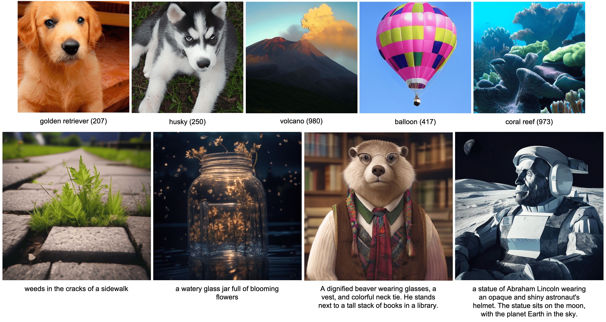

Autoregressive Model Beats Diffusion: Llama for Scalable Image Generation

We introduce LlamaGen, a new family of image generation models that apply original next-token prediction paradigm of large language models to visual generation domain. It is an affirmative answer to whether vanilla autoregressive models, e.g., Llama, without inductive biases on visual signals can achieve state-of-the-art image generation performance if scaling properly. We reexamine design spaces of image tokenizers, scalability properties of image generation models, and their training data quality. The outcome of this exploration consists of: (1) An image tokenizer with downsample ratio of 16, reconstruction quality of 0.94 rFID and codebook usage of 97\% on ImageNet benchmark. (2) A series of class-conditional image generation models ranging from 111M to 3.1B parameters, achieving 2.18 FID on ImageNet 256×256 benchmarks, outperforming the popular diffusion models such as LDM, DiT. (3) A text-conditional image generation models with 775M parameters, from two-stage training on LAION-COCO and high aesthetics quality images, demonstrating competitive performance of visual quality and text alignment. (4) We verify the effectiveness of LLM serving frameworks in optimizing the inference speed of image generation models and achieve 326\% - 414\% speedup. We release all models and codes to facilitate open-source community of visual generation and multimodal foundation models.


@article{sun2024autoregressive,
title={Autoregressive Model Beats Diffusion: Llama for Scalable Image Generation},
author={Sun, Peize and Jiang, Yi and Chen, Shoufa and Zhang, Shilong and Peng, Bingyue and Luo, Ping and Yuan, Zehuan},
journal={arXiv preprint arXiv:2406.06525},
year={2024}
}
Acknowledgements: We thank DreamBooth for providing the page templates.